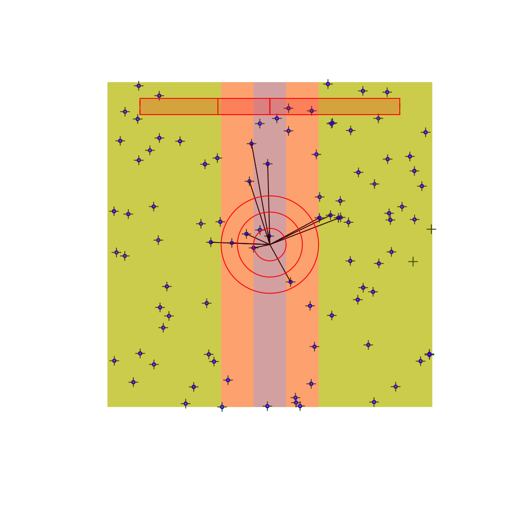

Goals of the package
The {bSims} R package is a highly scientific and utterly addictive bird point count simulator.
The goal of the package is to:
- test statistical assumptions,
- aid survey design,
- and have fun while doing it!
Examples
The general idea
Set up a bSims world:
- initiating the landscape,
- populating the landscape by individuals,
- breath life into the virtual birds and let them sing,
- put in an observer and let the observation process begin.
library(bSims)
#> Loading required package: intrval
#> Loading required package: mefa4
#> Loading required package: Matrix
#> mefa4 0.3-6 2019-06-20
#> Loading required package: MASS
#> Loading required package: deldir
#> deldir 0.1-23
#> bSims 0.1-4 2019-11-22 peet-seeeeep
phi <- 0.5 # singing rate
tau <- 1:3 # EDR by strata
dur <- 10 # simulation duration
tbr <- c(3, 5, 10) # time intervals
rbr <- c(0.5, 1, 1.5, Inf) # counting radii
l <- bsims_init(10, 0.5, 1)# landscape
p <- bsims_populate(l, 1) # population
a <- bsims_animate(p, # events
vocal_rate=phi, duration=dur)
o <- bsims_detect(a, # detections
tau=tau)
x <- bsims_transcribe(o, # transcription
tint=tbr, rint=rbr)
plot(x)
get_table(x)
#> 0-3min 3-5min 5-10min
#> 0-50m 1 0 0
#> 50-100m 2 0 0
#> 100-150m 1 0 1
#> 150+m 5 2 0
head(get_events(a))
#> x y t v i
#> 1 1.2858877 4.1163019 0.01671414 1 54
#> 2 4.0694122 1.1655596 0.07250391 1 87
#> 3 3.2209493 1.8648520 0.12206197 1 79
#> 4 -0.7213338 0.3278765 0.13202802 1 36
#> 5 1.9062295 -2.1817138 0.14871710 1 64
#> 6 -1.5272440 0.7007578 0.23268680 1 32
head(get_detections(o))
#> x y t v d i j
#> 4 -0.72133380 0.32787649 0.1320280 1 0.7923544 36 36
#> 7 -0.62942960 1.94816492 0.2606090 1 2.0473222 40 40
#> 14 0.63723917 -1.14976789 0.3598231 1 1.3145493 49 49
#> 53 -0.02289133 0.26038767 1.3021201 1 0.2613920 41 41
#> 58 -0.56461472 3.10517534 1.3679124 1 3.1560899 39 39
#> 69 -1.81733289 0.07086729 1.5056050 1 1.8187141 22 22Single habitat case
phi <- 0.5
tau <- 2
Den <- 10
set.seed(1)
l <- bsims_init()
a <- bsims_populate(l, density=Den)
b <- bsims_animate(a, vocal_rate=phi)
o <- bsims_detect(b, tau=tau)
tint <- c(1, 2, 3, 4, 5)
rint <- c(0.5, 1, 1.5, 2) # truncated at 200 m
(tr <- bsims_transcribe(o, tint=tint, rint=rint))
#> bSims transcript
#> 1 km x 1 km
#> stratification: H
#> total abundance: 1014
#> duration: 10 min
#> detected: 259 heard
#> 1st event detected by breaks:
#> [0, 1, 2, 3, 4, 5 min]
#> [0, 50, 100, 150, 200 m]
(rem <- tr$removal) # binned new individuals
#> 0-1min 1-2min 2-3min 3-4min 4-5min
#> 0-50m 1 3 1 2 0
#> 50-100m 7 3 5 1 1
#> 100-150m 12 2 2 1 2
#> 150-200m 13 8 2 1 1
colSums(rem)
#> 0-1min 1-2min 2-3min 3-4min 4-5min
#> 33 16 10 5 4
rowSums(rem)
#> 0-50m 50-100m 100-150m 150-200m
#> 7 17 19 25
plot(tr)
Estimating density
Estimating density with truncation
library(detect)
#> Loading required package: Formula
#> Loading required package: stats4
#> Loading required package: pbapply
#> detect 0.4-2 2018-08-29
## singing rate
fitp <- cmulti.fit(matrix(colSums(rem), 1), matrix(tint, 1), type="rem")
phihat <- exp(fitp$coef)
c(true=phi, estimate=exp(fitp$coef))
#> true estimate
#> 0.5000000 0.5768794
(p <- 1-exp(-max(tint)*phihat))
#> [1] 0.9441115
## EDR
fitq <- cmulti.fit(matrix(rowSums(rem), 1), matrix(rint, 1), type="dis")
tauhat <- exp(fitq$coef)
c(true=tau, estimate=tauhat)
#> true estimate
#> 2.000000 2.273305
rmax <- max(rint)
(q <- (tauhat^2/rmax^2) * (1-exp(-(rmax/tauhat)^2)))
#> [1] 0.6961677
## density
(A <- pi * rmax^2)
#> [1] 12.56637
Dhat <- sum(rem) / (A * p * q)
c(true=Den, estimate=Dhat)
#> true estimate
#> 10.000000 8.233071Estimating density with unlimited distance
rint <- c(0.5, 1, 1.5, 2, Inf) # unlimited
(tr <- bsims_transcribe(o, tint=tint, rint=rint))
#> bSims transcript
#> 1 km x 1 km
#> stratification: H
#> total abundance: 1014
#> duration: 10 min
#> detected: 259 heard
#> 1st event detected by breaks:
#> [0, 1, 2, 3, 4, 5 min]
#> [0, 50, 100, 150, 200, Inf m]
(rem <- tr$removal) # binned new individuals
#> 0-1min 1-2min 2-3min 3-4min 4-5min
#> 0-50m 1 3 1 2 0
#> 50-100m 7 3 5 1 1
#> 100-150m 12 2 2 1 2
#> 150-200m 13 8 2 1 1
#> 200+m 15 9 6 6 2
colSums(rem)
#> 0-1min 1-2min 2-3min 3-4min 4-5min
#> 48 25 16 11 6
rowSums(rem)
#> 0-50m 50-100m 100-150m 150-200m 200+m
#> 7 17 19 25 38
fitp <- cmulti.fit(matrix(colSums(rem), 1), matrix(tint, 1), type="rem")
phihat <- exp(fitp$coef)
c(true=phi, estimate=phihat)
#> true estimate
#> 0.5000000 0.5128359
(p <- 1-exp(-max(tint)*phihat))
#> [1] 0.9230177
fitq <- cmulti.fit(matrix(rowSums(rem), 1), matrix(rint, 1), type="dis")
tauhat <- exp(fitq$coef)
c(true=tau, estimate=tauhat)
#> true estimate
#> 2.000000 1.992879
(Ahat <- pi * tauhat^2)
#> [1] 12.47704
q <- 1
Dhat <- sum(rem) / (Ahat * p * q)
c(true=Den, estimate=Dhat)
#> true estimate
#> 10.000000 9.204164Replicating landscapes
We have used so far a single location. We also set the density unreasonably high to have enough counts for a reasonable estimate. We can independently replicate the simulation for multiple landscapes and analyze the results to give justice to bSims under ideal conditions:
phi <- 0.5
tau <- 1
Den <- 1
tint <- c(3, 5, 10)
rint <- c(0.5, 1, 1.5, Inf)
sim_fun <- function() {
l <- bsims_init()
a <- bsims_populate(l, density=Den)
b <- bsims_animate(a, vocal_rate=phi)
o <- bsims_detect(b, tau=tau)
bsims_transcribe(o, tint=tint, rint=rint)$rem
}
B <- 200
set.seed(123)
res <- pbapply::pbreplicate(B, sim_fun(), simplify=FALSE)
Ddur <- matrix(tint, B, length(tint), byrow=TRUE)
Ydur1 <- t(sapply(res, function(z) colSums(z)))
Ydur2 <- t(sapply(res, function(z) colSums(z[-nrow(z),])))
colSums(Ydur1) / sum(Ydur1)
colSums(Ydur2) / sum(Ydur2)
fitp1 <- cmulti(Ydur1 | Ddur ~ 1, type="rem")
fitp2 <- cmulti(Ydur2 | Ddur ~ 1, type="rem")
phihat1 <- unname(exp(coef(fitp1)))
phihat2 <- unname(exp(coef(fitp2)))
Ddis1 <- matrix(rint, B, length(rint), byrow=TRUE)
Ddis2 <- matrix(rint[-length(rint)], B, length(rint)-1, byrow=TRUE)
Ydis1 <- t(sapply(res, function(z) rowSums(z)))
Ydis2 <- t(sapply(res, function(z) rowSums(z)[-length(rint)]))
colSums(Ydis1) / sum(Ydis1)
colSums(Ydis2) / sum(Ydis2)
fitq1 <- cmulti(Ydis1 | Ddis1 ~ 1, type="dis")
fitq2 <- cmulti(Ydis2 | Ddis2 ~ 1, type="dis")
tauhat1 <- unname(exp(fitq1$coef))
tauhat2 <- unname(exp(fitq2$coef))
## unlimited correction
Apq1 <- pi * tauhat1^2 * (1-exp(-max(tint)*phihat1)) * 1
rmax <- max(rint[is.finite(rint)])
## truncated correction
Apq2 <- pi * rmax^2 *
(1-exp(-max(tint)*phihat2)) *
(tauhat2^2/rmax^2) * (1-exp(-(rmax/tauhat2)^2))
round(rbind(
phi=c(true=phi, unlimited=phihat1, truncated=phihat2),
tau=c(true=tau, unlimited=tauhat1, truncated=tauhat2),
D=c(Den, unlimited=mean(rowSums(Ydis1))/Apq1,
truncated=mean(rowSums(Ydis2))/Apq2)), 4)Shiny apps
Play with detection functions:
Play with simulations and explore biases in a single-habitat setting (see also https://psolymos.shinyapps.io/bSimsH/):
Play with simulations and explore biases in a stratified habitat setting with road and edge (see also https://psolymos.shinyapps.io/bSimsHER/):